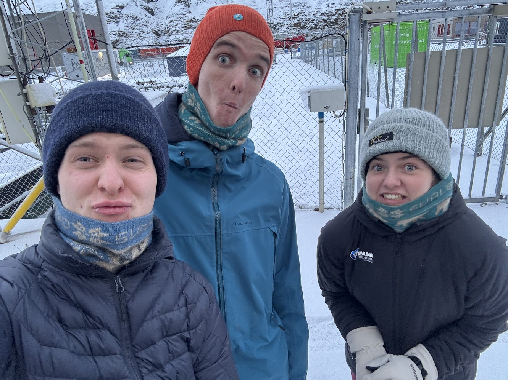
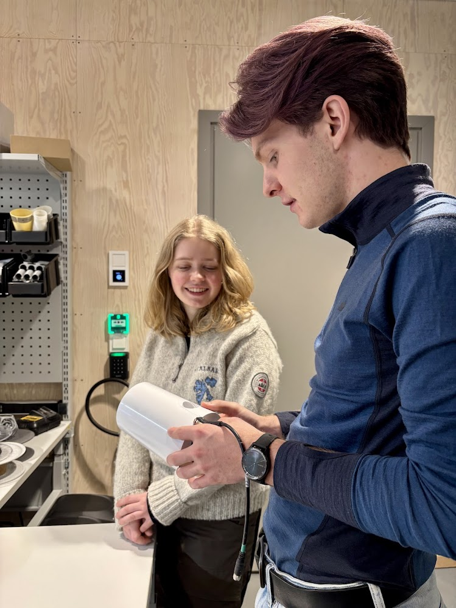
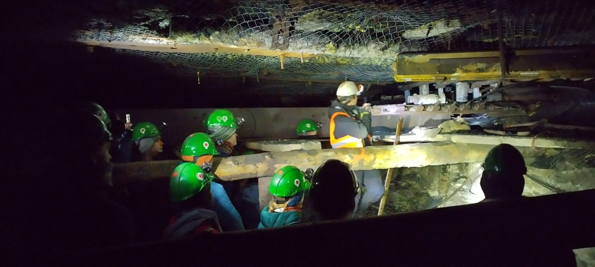
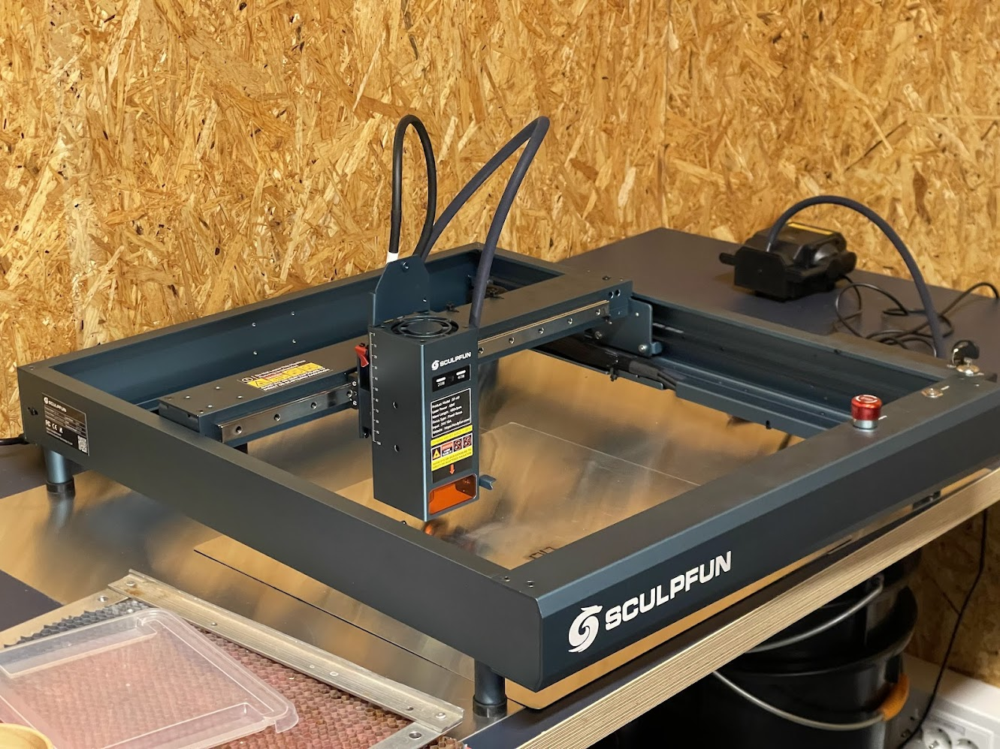

Plante Prosjekt
Intro
Forskerklassen har hatt et prosjekt der vi skal plante noe og se om det vokser. Vi har fått ting fra bryggeriet og skal prøve å bruke det til å plante. Vi skal plante ulike typer frø med ulike typer vanningssystemer og sammenligne de med hverandre for å finne ut hva som funker best.
Ebb and flow

Dette er en metode å vanne planter på der man bruke både ebb og flow
Capillary

Dette er en annen metode å vanne planter på der man bruke filt og vann
Oppsett
Vi må sette opp systemene som innebære bygging av lys, plante frøene og sette opp kassene med filt.
Sjekking
Etter at alt var satt opp og klart måtte vi vanne plantene regelmessig og sjekke at alt gikk bra med dem.
Problemløsning og forbedringer
Vi møtte på en del problemer vi måtte løse, som at noe av det mugglet og noen ting voskte ikke helt.
Resultat
Vi fikk noen spirer selv om noe av det mugglet.

Bilder

